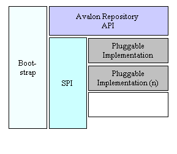

Avalon Repository
The Avalon Repository is a Java API, SPI, reference implementation and bootstrap platform that provides support for the dynamic artifact loading, classloader chain creation, and generic application bootstrapping.
